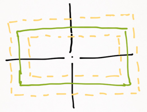
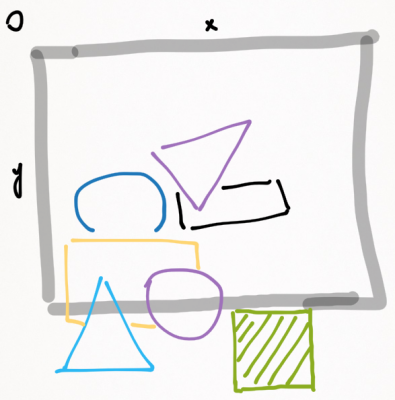

I was arguing with a book today. It's more like the book, actually. If a professional programmer would choose just one book to read about their craft, it would probably be Steve McConnel's Code Complete. So, in the section about the class design the author quotes and endorses himself an advice of a peer of his, yet another software guru – Scott Meyers. Here's the quote:
The single most important rule in object-oriented programming with C++ is this: public inheritance means "is a." Commit this rule to memory.
"Whoa, really? That categorically?" – told I to the book, being pretty sure it's more nuanced than just that straight rule. Well, who am I to argue with Mr. Meyers and Mr. McConnel? I'm simply embarrassing myself writing this right now, am I not? Please bare with me for a moment before rushing to the conclusion. The two gurus are right of course, but there's a catch: the is-a they're talking about isn't the is-a you're used to in the real world. Here's a great example I heard from Robert C. Martin on Hanselminutes, – I'll take the main idea and sugar-coat it a bit. Let it be Plato casually addressing Meletus.
– Come hither, Meletus, and let me ask a question of you. Is square a rectangle?
– Of course it is! What kind of question is that?
– Good. Let's imagine us implementing a Rectangle class, having methods setHeight(float h) and setWidth(float w), inflating or deflating the figure, keeping its center's coordinates fixed. Say, it's a vector graphics program... You tell a rectangle to change the height or width, and it triggers a redraw.

– Sure. But I'd advise you to indicate the units of measurement in such an interface.
– Oh, totally. However, that's irrelevant to what I'm trying to convey. Suppose now we also need a class for a Square. Is Square a Rectangle?
– You've already asked.
– Indeed. Should I code it as class Square extends Rectangle then?
– Yes...
– What will be special about the Square's implementation of setHeight and setWidth?
– Well, a Square has to remain a square. Therefore, adjusting width/height will also result in adjusting height/width.
– Precisely! Now imagine we have a raster viewport over the plane of figures, that gets rendered on a computer display. It subscribes to the figures' geometry changes, and decides whether there's a need to recalcualte/redraw the raster. Then, at some point it has the following configuration.

– Cool drawing Plato!
– Thanks. Now, the green hatched square, which is so close to the viewport's border, receives a command to increase its width. The viewport has been designed by an experienced OOP practitioner, and, of course, it works with Rectangles (Squares included) polymorphically. It thinks: "Alright, the width grew, but there's no vertical overlap with the viewport area, I can safely ignore that change!" TADA! A bug!
– But... but...
– So, is Square a Rectangle?
– #$$%&*~@-!!!
Where exactly did it go wrong? How could Plato trick Meletus? Let us reiterate. A square is definitely a rectangle, no doubt about that. But is Square a Rectangle, having the public interface methods setHeight and setWidth described above? Hell no! There's a very special meaning of is-a for the object classes' inheritance, and it's defined by the Liskov Substitution Principle: an instance of a subclass must be usable in any context where an instance of the superclass is used, and there must be no semantic incompatibilities. Clearly, the syntactic adherence to the same public interface is not enough to assure the is-a relationship in code. Square broke the public interface semantics contract of Rectangle, and therefore, Square is-not-a Rectangle here.
Published: 2015-01-27